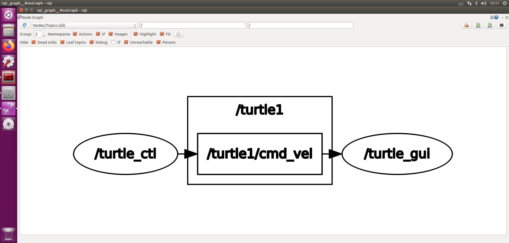

ROS Command-line tools
Common user tools
rosbag
rosbag is a command-line tool for performing various operations on ROS bag files, including playing, recording, and validating.
ros_readbagfile
See ROS/Tutorials/reading msgs from a bag file for help and a tutorial on how to use the 3rd-party ros_readbagfile command-line tool.
rosbash
rosbash is not a command, but rather a suite of commands and functionality. It requires that you source the contents of the rosbash file
source $ROS_ROOT/tools/rosbash/rosbash
which, if you followed the installation guide, should already be done by your bashrc file.
rosbash provides the commands roscd and rosed, in addition to adding correct tab-completion functionality to roscd, rosed, rosmake, and rosrun.
roscd
roscd is part of the rosbash suite. It allows you to cd directly to a package, stack, or common location by name rather than having to know the package path.
Usage:
roscd locationname[/subdir]
Example:
roscd roscpp/include
roscd without an argument will take you $ROS_ROOT. In addition to your packages and stacks, there are some common locations, "log", and "test_results" which will take you directly to those locations.
For advanced users, you can extend roscd with your own keywords by modifying the $ROS_LOCATIONS environment variable to contain a colon-separated list of keys and locations that will be included in the roscd path. For example,
export $ROS_LOCATIONS="rospkg=/path/to/rospkg:stairpkg=/path/to/stairpkg"
Prior to ROS-0.8, you could roscd to the first directory on your $ROS_PACKAGE_PATH using the pkg keyword. This functionality can be restored with:
export $ROS_LOCATIONS="pkg=$ROS_PACKAGE_PATH"
rosclean
New in C Turtle
Cleanup filesystem resources (e.g. log files) created by ROS. See rosclean.
roscore
roscore runs the ROS Core Stack (Master, Parameter Server, rosout, etc...).
rosdep
Documented at rosdep, this installs system dependencies
Usage:
rosdep install PACKAGE_NAME
rosed
rosed is part of the rosbash suite. It allows you to directly edit a file within a package by package name rather than having to know the package path.
Usage:
rosed packagename filename
Example:
rosed roscpp ros.h
If the filename is not uniquely defined within the package, a menu will prompt you to choose which of the possible files you want to edit.
rosed will open the editor defined in your $EDITOR environmental variable, or else default to vim.
roscreate-pkg
roscreate-pkg creates common Manifest, CMakeLists, Doxygen and other files necessary for a new ROS package. It is part of the roscreate package.
roscreate-stack
roscreate-stack creates common Stack Manifest, CMakeLists and other files necessary for a new ROS stack. It is part of the roscreate package.
rosrun
rosrun allows you to run an executable in an arbitrary package without having to cd (or roscd) there first.
Usage:
rosrun package executable
Example:
rosrun roscpp_tutorials talker
roslaunch
roslaunch launches a set of nodes from an XML configuration file and includes support for launching on remote machines. More documentation is available on the roslaunch page.
roslocate
Removed in ROS 1.4: this is now part of the rosinstall tool
roslocate finds the repository that a ROS package is stored in, e.g. roslocate svn tf. It makes it easy to quickly checkout the source of a package: svn coroslocate svn tf``. More documentation is available on the roslocate page.
rosmake
See the rosmake page.
rosmsg
rosmsg displays Message data structure definitions. More documentation is available on the rosmsg page.
rosnode
rosnode displays runtime node information and lets you ping nodes to check connectivity. More documentation is available on the rosnode page.
rospack
See the rospack page.
rosparam
rosparam enables getting and setting parameter server values from the command-line using YAML-encoded text.
rossrv
rossrv displays Service srv data structure definitions. More documentation is available on the rossrv page.
rosservice
rosservice displays run-time information about Services and also lets you print out messages being sent to a topic. More documentation is available on the rosservice page.
rosstack
See the rosstack page.
rostopic
rostopic displays run-time information about Topics and also lets you print out messages being sent to a topic. More documentation is available on the rostopic page.
rosversion
Graphical tools
The ROS graphical tools often require additional dependencies before they can be used, such as graphviz and Python GTK. You can use bash <(rosdep satisfy PACKAGE_NAME) to quickly install the dependencies for these tools.
rqt_bag
rqt_bag is a graphical tool for viewing data in ROS bag files.
rqt_deps
rqt_deps generates a PDF of ROS dependencies.
rqt_graph
rqt_graph displays an interactive graph of ROS nodes and topics. See the rosgraph package for documentation.
如果工具未安装，可以使用以下命令安装：
# <distro>替换为对应的ROS版本，如：kinetic
$ sudo apt install ros-<distro>-rqt
$ sudo apt install ros-<distro>-rqt-common-plugins
在节点运行后，在命令行输入rqt_graph和rosrun rqt_graph rqt_graph，即可看到表示各节点之间关系的网络拓扑图。
$ rqt_graph
# 或者
$ rosrun rqt_graph rqt_graph

rqt_plot
rqt_plot plots numerical data on a ROS topic over time.
Less-used tools
The following tools may be commonly used by internal tools, but aren't often used by end users.
gendeps
See the roslib page